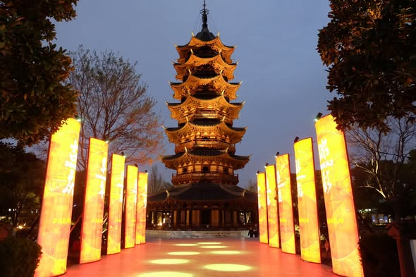
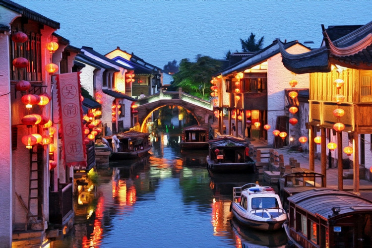

Discover Suzhou
Suzhou, located in Jiangsu Province, is known as the "Venice of the East" for its extensive canal system and classical gardens. With a history dating back over 2,500 years, it's a city that preserves traditional Chinese architecture and culture while embracing modern development.
Suggested Visit Time
Recommended Duration: 2-3 days
Best Time to Visit: March to May (spring) when the gardens are in bloom, or September to November (autumn) when the weather is mild and comfortable.
Humble Administrator's Garden
The Humble Administrator's Garden is the largest and most famous classical garden in Suzhou. Built in the 16th century during the Ming Dynasty, it's a UNESCO World Heritage site known for its beautiful pavilions, ponds, rockeries, and meticulously designed landscapes.
The garden is divided into three sections: the eastern, central, and western sections. Each section has its own unique features, but all showcase the traditional Chinese gardening philosophy of harmonizing with nature. It's a perfect place to experience traditional Chinese garden design.
Tiger Hill
Tiger Hill is a scenic hill located northwest of Suzhou's old town. It's known for its beautiful scenery, historical sites, and the iconic Yunyan Pagoda, which leans like the Leaning Tower of Pisa.
The hill has a history dating back over 2,500 years and is associated with the legend of King Helü of Wu. Visitors can explore the pagoda, ancient stone carvings, and beautiful gardens while enjoying panoramic views of Suzhou from the top of the hill.

Panmen Scenic Area
Panmen Scenic Area is one of the most important historical sites in Suzhou, featuring the ancient Panmen Gate, one of the few remaining city gates from the Spring and Autumn Period (770-476 BC). The area also includes the Ruiguang Pagoda, one of Suzhou's oldest pagodas.
Visitors can explore the ancient city walls, enjoy the beautiful gardens, and take boat rides along the moat. The scenic area offers a unique combination of historical relics and natural beauty, making it a must-visit attraction in Suzhou.
Jinji Lake
Jinji Lake is a large artificial lake located in Suzhou Industrial Park, showcasing the modern side of the city. Surrounded by skyscrapers, shopping malls, and entertainment venues, it's a popular destination for both locals and tourists.
Visitors can enjoy boat rides on the lake, stroll along the scenic waterfront, or visit attractions like the Ferris wheel and the Suzhou Culture and Arts Center. The lake is especially beautiful at night when the surrounding buildings are lit up.

Qilishantang (七里山塘)
Qilishantang, also known as Shantang Street, is a historic water street located in the old town of Suzhou. Stretching for about 3.5 kilometers (hence the name "Qilishan" which means "seven li"), it's one of the oldest and most well-preserved streets in the city.
Originally built in the Tang Dynasty (618-907 AD) by the famous poet Bai Juyi, Qilishantang features traditional architecture, canals, and stone bridges. Today, it's a popular pedestrian street lined with shops, restaurants, and historical sites, offering a glimpse into Suzhou's traditional way of life.
Pingjiang Road
Pingjiang Road is a historic street in Suzhou's old town. It runs parallel to the Pingjiang River and is lined with traditional houses, shops, and restaurants. It's a popular place to experience traditional Suzhou culture and cuisine.
The street has a history dating back over 800 years and preserves the traditional water town architecture of Suzhou. Visitors can walk along the street, explore local shops, and enjoy traditional Suzhou snacks and dishes. It's a great place to experience the charm of old Suzhou.
Local Food
Suzhou cuisine, also known as Su cuisine, is one of the eight major cuisines in China. It's known for its sweet flavors, delicate presentation, and use of fresh ingredients. Many dishes feature freshwater fish and seafood from the nearby rivers and lakes.
Suzhou-style Mooncakes
Suzhou-style mooncakes are known for their flaky crust and sweet fillings, often made with red bean paste or lotus seed paste. They're a popular treat during the Mid-Autumn Festival and throughout the year.
Sweet and Sour Mandarin Fish
This dish features fresh mandarin fish cooked with a sweet and sour sauce. The fish is often served with its bones removed, making it easy to eat. It's a signature dish of Suzhou cuisine.
Suzhou Noodles
Suzhou-style noodles are typically served in a clear broth with various toppings, such as braised pork, bamboo shoots, and pickles. They're a popular breakfast dish in Suzhou.
Sticky Rice Dumplings
These dumplings are made with glutinous rice and various fillings, such as red bean paste or meat. They're often wrapped in bamboo leaves and steamed, making them a popular snack in Suzhou.